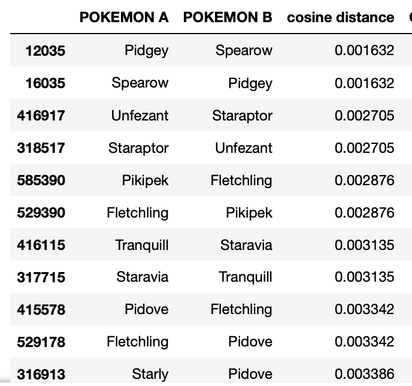

Metodologia para critério de avaliação da troca
O critério foi adotado após uma analise de dados em um jupyter nootbookPara essa analise, afim de não consumir muito a API que é gratuita, a pedido deles (fair use) foi utilizado um dataset do kaggle
Clusters:
Foi utilizado 20 clusters, com base na analise da curva que segue:
Olhando para os clusters de dados, ficou nítido que o Cluster 3 é o mais poderoso, e o cluster 10 o menos poderoso, sendo os parâmetros mais interessantes: is_legendary, base_exp, e sp_atack. Conforme imagem abaixo:

Entrevista:
A fim de confirmar a informação, um mestre pokemon foi consultado, e elucidou que alguns pokemons utilizam o ataque especial (special atack), enquanto outros utilizam apenas o ataque normal (atack). Por exemplo o Charmander tem maior pontuação em special atack pois usa ataques como lança chamas, enquanto o machop, usa o ataque comum, como em investida por exemplo.Conclusão:
Com isso, foi utilizado para a avaliação: (base_exp*2 + atack + special atack * 5 se is_legendary ou is_mythic) Seguem alguns pokemons categorizados no cluster 3, e sua distancia com outro pokemon proxímo. De modo geral podemos dizer que quanto mais proximo de um pokemon no Cluster 3, mais poderoso será o pokemon De forma oposta, os pokemons categorizados no cluster 10 são os considerados mais fracos pelo algoritmo
cluster 3

Cluster 10

Testes de troca justa
No limite, podemos avaliar os vizinhos mais próximos para avaliar se uma troca é justa, ou não. Além disso, podemos fazer testes considerando os clusters opostos, por exemplo nenhuma troca envolvendo o cluster 3 VS cluster 10 pode ser considerada justaCom isso o arquivo de testes, test.py, considerou os pokemons do cluster 10 e cluster 3, sendo testado para trocas justas:
Testes de troca injusta
No limite, podemos avaliar os vizinhos mais próximos para avaliar se uma troca é justa, ou não. Além disso, podemos fazer testes considerando os clusters opostos, por exemplo nenhuma troca envolvendo o cluster 3 VS cluster 10 pode ser considerada justaCom isso o arquivo de testes, test.py, considerou os pokemons do cluster 10 e cluster 3, sendo testado para trocas injustas:
Proximidade
Fazendo uma pesquisa no google para imagens de pokemons categorizados pelo nosso cluster como próximo, temos:
cluster 3


Cluster 10


Parece que o cluster dividiu bem nossos pokemons :)